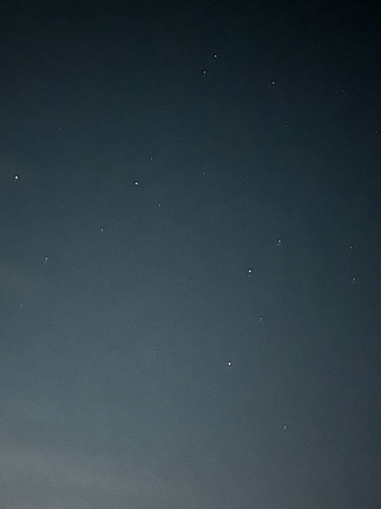

I used to have a strong desire to be remembered, now I want nothing more than to be forgotten. I’m down to my last bottle then I told him I’d stop drinking. I’ll relapse on the first day, I have nothing else to distract me and it’s kept me alive for so long. I want this website to be more than just my words, representative of my creativity too; it never works, the creativity in me stays within, I can never express myself no matter how hard I try.
I want my identity forgotten, but my word to remain. I’d rather be a concept than a person, is it due to my distaste for other people as a whole? It’s about to hit midnight, the stars burn bright, I think I have a new favourite. I hate having an identity, people always ask me why I’m always switching accounts on my social media, I never explain it as the severe identity issues I barely understand myself. I used to be happy with who I was, I wanted my memory to be something.
I never had anything to give, I worked with the little I had. I was young, I saw someone however many years older than me on the TV, christmas season, the young man giving away his money to the homeless because he recognised the struggle. Unaware to how much my own family struggled, I wanted to do the same thing he did with my christmas money, too young to have anything of my own. My mother never let me—with reason—how can someone with nothing truly give?
The digital world felt like an escape, where my *love* for others continued. I wanted my name to mean something to people, i don’t think I’d ever felt that it did before. Playing my favourite game whenever I got home from school, I still remember the day I beat Arceus. With all that dedication to a game, I was obviously a lot further than almost everybody else. The air feels thin, I don’t know how much more I’ll write. I had everything on that game, I can’t name many times I’ve got the feeling of completion there, I remember that rainbow Jirachi so clearly too. Training everything to the maximum, giving away half the strong Pokemon I had to lower level players, for I knew it’d help them achieve the same feeling of completion I did.
Most importantly, I don’t know if it was a description, or nickname, all I know is I could write something of my own on the Pokemon I gave, I don’t know what I wrote, but it included my name. I wanted my efforts to be recognised for once since they never had before, most people accepted blindly, I wont forget the girl who pointed out what I’d done and read me like a book “[name] wants to be remembered!”, it stung.
Ever since that, I almost hate when my efforts are recognised; it makes me feel disgusting, as if it’s all a performance. Once the act is over, I’d be disgusting. Who are you when the cameras aren’t rolling? I hate to be seen as a person, may my memory exist as a concept, I hate having my name, face, anything that gives me identity being tied to my words. Maybe I should’ve never been transparent. My aunt calls me conflicted, like I’m multiple people in one. Is it because my actions never reflect how I truly think? If you met me casually, you’d never guess the words on this website ever came from me.
I feel as if everything I’ve done has tainted my soul beyond recognition. Would God recognise his own creation? I had so much good to me, I don’t know where the path changed. Was it being groomed, or was it something I’m at fault for? Uncertainty kills me, I can’t settle with anything less than certainty, but that’s what, in the end, keeps me glued to my struggle. We are smart enough to question why we are here and what purpose we serve, we fall short when it comes to being able to answer the questions we have which no other species concerns themselves with from what we can understand. These words will one day be used against me.
I love this website, I can never find the time to mention half whats on my mind to anyone I know, it’s never relevant. Consider this website a void for me to scream into. The words echo throughout, if anyone chooses to hear, they can. I’m scared to talk, my words are usually misinterpreted. Nobody will ever read it all, but if you truly care to hear what I say, thank you. Don’t bother telling me you do though, I’ll never believe you, you’ll never get a direct thank you. For anyone with pure intentions towards me, this applies. If I could trust—or believe any of this was real—I’d thank you from the bottom of my heart. I feel selfish at times due to my complete distrust for the people around me in this world I live in, please take this note as alternative gratitude. Here’s the stars tonight, the brightest flickers a lot, I feel mesmerised as I stare.
